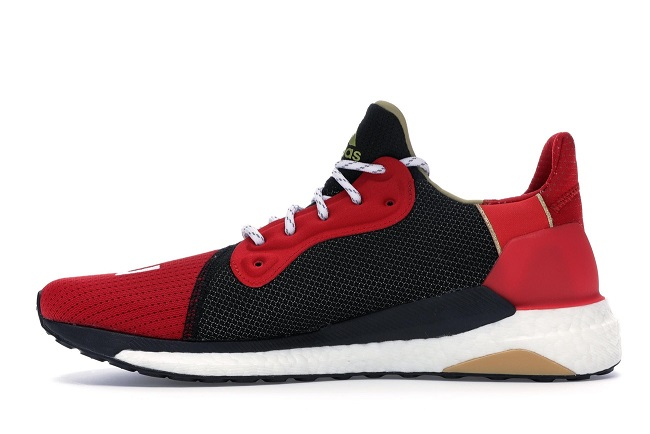
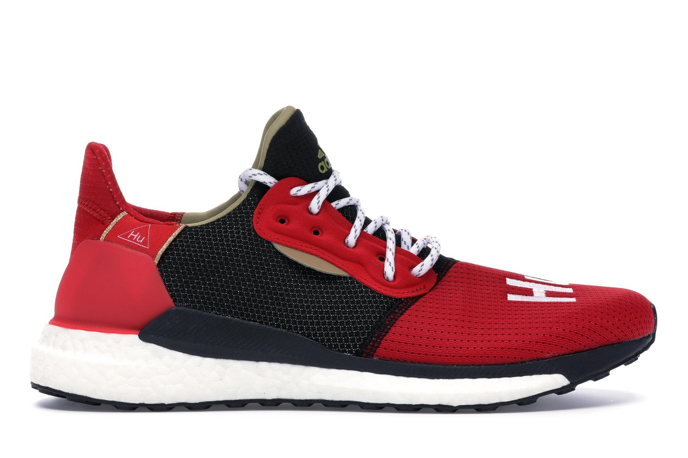
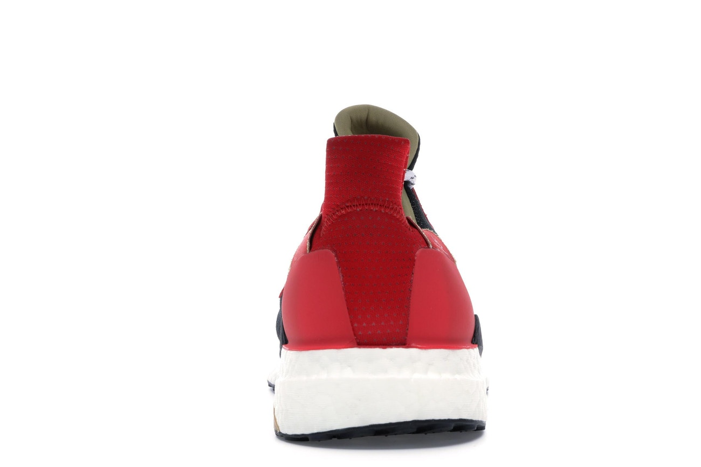
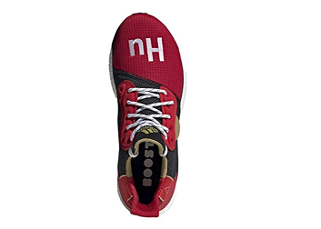

Adidas NMD Solar HU
The Pharrell William’s Solar Hu Glide “Chinese New Year” is another collaboration sneaker between Adidas and artist Pharrell Williams. The sneaker comes with a bright red mesh upper that is in contrast with black overlaying panels, with a thick outsole, “HU” branding on the toe box of the sneaker as well as thick rope laces. The colourway of this sneaker was released in conjunction with the Chinese New Year celebration.